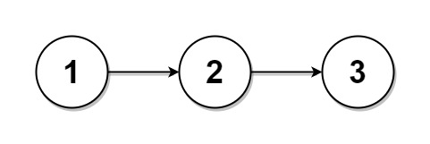
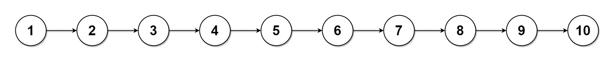

725. 分隔链表
先数链表长度 n：每段至少 n/k 个，前 n%k 段各多 1 个；从头顺序切 k 刀，每刀把段尾断开。
思路
- 一遍数出
n，则base = n / k、rem = n % k：第i段长base + (i < rem ? 1 : 0)，天然满足「前面 ≥ 后面、相差 ≤ 1」。 n < k时后面的段len = 0，直接放null（题面允许空段）。- 切割：段尾
cur.next = null断开，cur移到下一段开头；链表走完后剩余段全为null。
图解
最优解
1class Solution {2 public ListNode[] splitListToParts(ListNode head, int k) {3 // 先数全长 n，才知道每段该多长4 int n = 0;5 for (ListNode p = head; p != null; p = p.next) n++;6 int base = n / k, rem = n % k; // 每段至少 base 个，前 rem 段各多 1 个7 ListNode[] parts = new ListNode[k];8 ListNode cur = head;9 for (int i = 0; i < k; i++) {10 parts[i] = cur;11 int len = base + (i < rem ? 1 : 0); // 本段的结点数12 // 走到本段最后一个结点；链表用尽时 len 再大也只能停住13 for (int j = 1; j < len && cur != null; j++) cur = cur.next;14 if (cur == null) continue; // 后面的段全是 null15 ListNode next = cur.next;16 cur.next = null; // 断刀：本段到此为止17 cur = next;18 }19 return parts;20 }21}题目
给你一个头结点为 head 的单链表和一个整数 k ，请你设计一个算法将链表分隔为 k 个连续的部分。
每部分的长度应该尽可能的相等：任意两部分的长度差距不能超过 1 。这可能会导致有些部分为 null 。
这 k 个部分应该按照在链表中出现的顺序排列，并且排在前面的部分的长度应该大于或等于排在后面的长度。
返回一个由上述 k 部分组成的数组。
示例 1：

输入：head = [1,2,3], k = 5 输出：[[1],[2],[3],[],[]] 解释： 第一个元素 output[0] 为 output[0].val = 1 ，output[0].next = null 。 最后一个元素 output[4] 为 null ，但它作为 ListNode 的字符串表示是 [] 。
示例 2：

输入：head = [1,2,3,4,5,6,7,8,9,10], k = 3 输出：[[1,2,3,4],[5,6,7],[8,9,10]] 解释： 输入被分成了几个连续的部分，并且每部分的长度相差不超过 1 。前面部分的长度大于等于后面部分的长度。
提示：
- 链表中节点的数目在范围
[0, 1000] 0 <= Node.val <= 10001 <= k <= 50
题面取自力扣当前版本。
数据快照 2026-11-04。题面版权归力扣所有，本站点仅供本人学习使用，请勿对外发布。